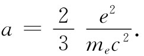
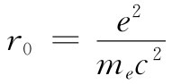
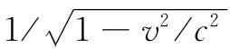
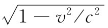
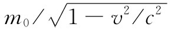
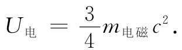

质量是从哪里来的呢？在我们的力学定律中就曾经假定每一物体都带有一种我们称之为质量的东西——这也意味着带有一个正比于其速度的动量。现在发现，一个带电粒子携带正比于它速度的动量，这是可以理解的。事实上，也许质量不过是这种电动力学效应。质量的起源迄今还未得到解释。最后在电动力学理论中就有极好的机会来理解这一种我们以前从未理解过的东西。意外地——更确切地说，是从麦克斯韦和坡印亭那里——得出结果，即任一带电粒子正是由于电磁影响才具有正比于其速度的动量。
让我们放保守一些而暂且说，存在两种质量——物体的总动量可以是机械动量与电磁动量两者之和。机械动量等于“机械”质量m机械 乘以v。在一些实验中，通过观察一个粒子有多少动量或观察它在轨道各处如何旋转来测量其质量，我们正在测量的是其总质量。普遍地说，动量等于总质量（m机械 +m电磁 ）乘速度。因此，凡观测到的质量都可能含有两部分（或可能有更多部分，若我们还包括其他类型的场的话）：机械部分加上电磁部分。我们明确知道有一个电磁部分，而且对于它已经有一个公式了。但却有一个令人激动的可能性，即机械部分根本就不存在——质量全都是电磁性质的。
让我们来看看，要是电子不具有机械质量的话必须有多大。可以通过令式（28.4）中的电磁质量等于所观测到的电子质量me 而找到。我们求得
 （28.5）
而量
 （28.6）
称为“经典电子半径”，它的数值为2.82×10-13 cm，约等于一个原子直径的十万分之一。
为什么要把r0 称为电子半径，而不是a呢？因为我们也可用另外想象的电荷分布——电荷也许会均匀分布在一个球体中，或者也许会像一个模糊的球体那样渗涂出去——来做同样的计算。对于任一特殊假定，因子2/3会改变成某个其他的分数。例如，对于均匀分布在一个球体内的电荷，这2/3就得由4/5代替。与其去争辩哪一种分布是对的，倒不如决定把r0 定义为一种“标称”半径。然后，不同的理论就可以提供其所喜爱的系数。
让我们追踪一下关于质量的电磁理论。上面的计算是针对v≪c的，如果进入高速度，又将发生什么情况呢？早期的尝试曾导致某些混乱，但洛伦兹却认识到在高速情况带电球体会收缩成一个椭球，而场则会按照我们在第26章中对于相对论性情况所导出的式（26.6）和（26.7）改变。如果你对那种情况下的p进行积分，则会发现，对于任意速度v，动量被改变一个因子 ：
换句话说，电磁质量与 成反比地随速度增加——是一项在相对论问世之前就已做出的发现。
为了确定粒子质量中有多少质量是机械性质的以及有多少是电性质的，早期曾提出了一些实验以测量一个粒子的观测质量如何会随速度而改变。当时人们相信，那电的部分才会 随速度变化，而机械部分则不会 。可是，当那些实验正在进行之际，理论家们也仍在继续工作。不久之后相对论发展起来，它提出不管质量来源于什么，全都 应当随 变化。式（28.7）就是质量与速度有关理论的起源。
让我们回到曾导致式（28.2）的有关场能的计算。根据相对论，能量U将具有质量U/c2 ，于是式（28.2）说，电子的场应该具有质量
这不同于式（28.4）中的电磁质量m电磁 。事实上，若我们只要结合（28.2）和（28.4）两式，便可写出

这个公式在相对论之前就被发现，而当爱因斯坦及其他人开始认识到U=mc2 必定始终成立时，就已经存在巨大混乱。